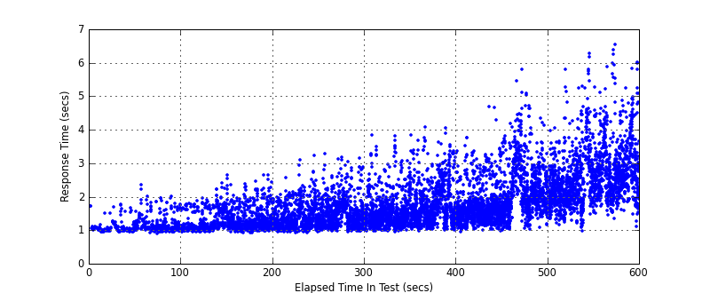
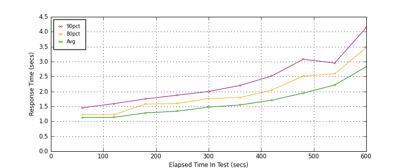
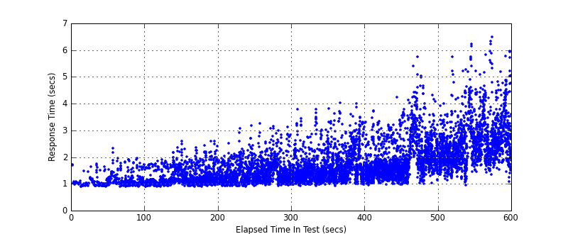
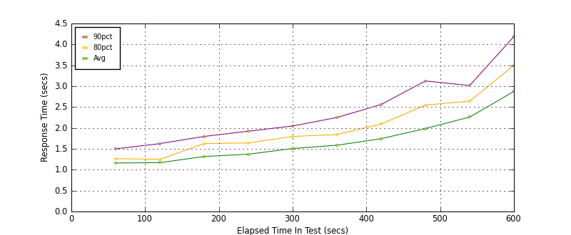
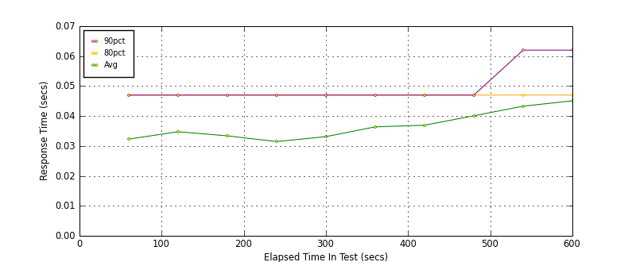
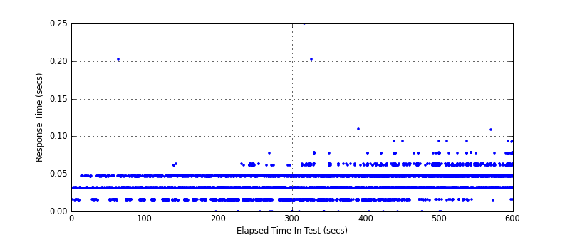

Performance Results Report
Summary
transactions: 8556
errors: 180
run time: 600 secs
rampup: 600 secs
test start: 2010-02-17 12:48:10
test finish: 2010-02-17 12:58:07
time-series interval: 60 secs
workload configuration:
| group name | threads | script name |
|---|
| user_group-2 | 25 | httplib_navi_login.py |
| user_group-1 | 25 | httplib_navi_login.py |
All Transactions
Response Time Summary (secs)
| count | min | avg | 80pct | 90pct | 95pct | max | stdev |
|---|
| 8556 | 0.908 | 1.823 | 2.338 | 2.846 | 3.322 | 6.545 | 0.765 |
Interval Details (secs)
| interval | count | avg | 80pct | 90pct | 95pct | stdev |
|---|
| 1 | 192 | 1.161 | 1.262 | 1.497 | 1.677 | 0.230 |
| 2 | 437 | 1.169 | 1.245 | 1.631 | 1.766 | 0.246 |
| 3 | 622 | 1.316 | 1.620 | 1.794 | 1.927 | 0.326 |
| 4 | 809 | 1.372 | 1.643 | 1.916 | 2.064 | 0.348 |
| 5 | 939 | 1.508 | 1.802 | 2.050 | 2.347 | 0.419 |
| 6 | 1077 | 1.586 | 1.835 | 2.258 | 2.614 | 0.497 |
| 7 | 1157 | 1.743 | 2.096 | 2.559 | 2.929 | 0.549 |
| 8 | 1148 | 1.993 | 2.562 | 3.130 | 3.589 | 0.768 |
| 9 | 1136 | 2.259 | 2.646 | 3.004 | 3.435 | 0.629 |
| 10 | 989 | 2.876 | 3.500 | 4.186 | 4.535 | 0.886 |
Graphs
Response Time: 60 sec time-series

Response Time: raw data (all points)

Throughput: 5 sec time-series

Custom Timer: LOGIN_TTFB
Response Time Summary (secs)
| count | min | avg | 80pct | 90pct | 95pct | max | stdev |
|---|
| 8506 | 0.891 | 1.784 | 2.297 | 2.797 | 3.281 | 6.484 | 0.758 |
Interval Details (secs)
| interval | count | avg | 80pct | 90pct | 95pct | stdev |
|---|
| 1 | 192 | 1.129 | 1.235 | 1.453 | 1.640 | 0.229 |
| 2 | 437 | 1.134 | 1.219 | 1.593 | 1.718 | 0.242 |
| 3 | 622 | 1.283 | 1.578 | 1.750 | 1.890 | 0.322 |
| 4 | 809 | 1.340 | 1.594 | 1.875 | 2.016 | 0.342 |
| 5 | 939 | 1.475 | 1.765 | 2.000 | 2.313 | 0.412 |
| 6 | 1077 | 1.550 | 1.797 | 2.203 | 2.578 | 0.492 |
| 7 | 1157 | 1.706 | 2.047 | 2.515 | 2.890 | 0.544 |
| 8 | 1148 | 1.946 | 2.515 | 3.078 | 3.484 | 0.752 |
| 9 | 1136 | 2.216 | 2.594 | 2.953 | 3.390 | 0.627 |
| 10 | 989 | 2.830 | 3.469 | 4.141 | 4.484 | 0.885 |
Graphs
Response Time: 60 sec time-series

Response Time: raw data (all points)

Throughput: 5 sec time-series

Custom Timer: LOGIN_TTLB
Response Time Summary (secs)
| count | min | avg | 80pct | 90pct | 95pct | max | stdev |
|---|
| 8506 | 0.906 | 1.821 | 2.343 | 2.844 | 3.313 | 6.546 | 0.764 |
Interval Details (secs)
| interval | count | avg | 80pct | 90pct | 95pct | stdev |
|---|
| 1 | 192 | 1.161 | 1.265 | 1.500 | 1.672 | 0.230 |
| 2 | 437 | 1.169 | 1.250 | 1.625 | 1.765 | 0.245 |
| 3 | 622 | 1.316 | 1.625 | 1.797 | 1.922 | 0.326 |
| 4 | 809 | 1.372 | 1.641 | 1.922 | 2.062 | 0.348 |
| 5 | 939 | 1.508 | 1.797 | 2.047 | 2.359 | 0.419 |
| 6 | 1077 | 1.586 | 1.843 | 2.250 | 2.610 | 0.497 |
| 7 | 1157 | 1.743 | 2.094 | 2.562 | 2.922 | 0.549 |
| 8 | 1148 | 1.986 | 2.547 | 3.125 | 3.516 | 0.756 |
| 9 | 1136 | 2.259 | 2.641 | 3.015 | 3.437 | 0.629 |
| 10 | 989 | 2.876 | 3.500 | 4.188 | 4.531 | 0.886 |
Graphs
Response Time: 60 sec time-series

Response Time: raw data (all points)
Throughput: 5 sec time-series

Custom Timer: TRANSFER
Response Time Summary (secs)
| count | min | avg | 80pct | 90pct | 95pct | max | stdev |
|---|
| 8506 | 0.000 | 0.038 | 0.047 | 0.047 | 0.062 | 0.250 | 0.014 |
Interval Details (secs)
| interval | count | avg | 80pct | 90pct | 95pct | stdev |
|---|
| 1 | 192 | 0.032 | 0.047 | 0.047 | 0.047 | 0.011 |
| 2 | 437 | 0.035 | 0.047 | 0.047 | 0.047 | 0.014 |
| 3 | 622 | 0.033 | 0.047 | 0.047 | 0.047 | 0.012 |
| 4 | 809 | 0.031 | 0.047 | 0.047 | 0.047 | 0.012 |
| 5 | 939 | 0.033 | 0.047 | 0.047 | 0.047 | 0.014 |
| 6 | 1077 | 0.036 | 0.047 | 0.047 | 0.047 | 0.016 |
| 7 | 1157 | 0.037 | 0.047 | 0.047 | 0.047 | 0.013 |
| 8 | 1148 | 0.040 | 0.047 | 0.047 | 0.062 | 0.012 |
| 9 | 1136 | 0.043 | 0.047 | 0.062 | 0.063 | 0.011 |
| 10 | 989 | 0.045 | 0.047 | 0.062 | 0.063 | 0.012 |
Graphs
Response Time: 60 sec time-series

Response Time: raw data (all points)

Throughput: 5 sec time-series